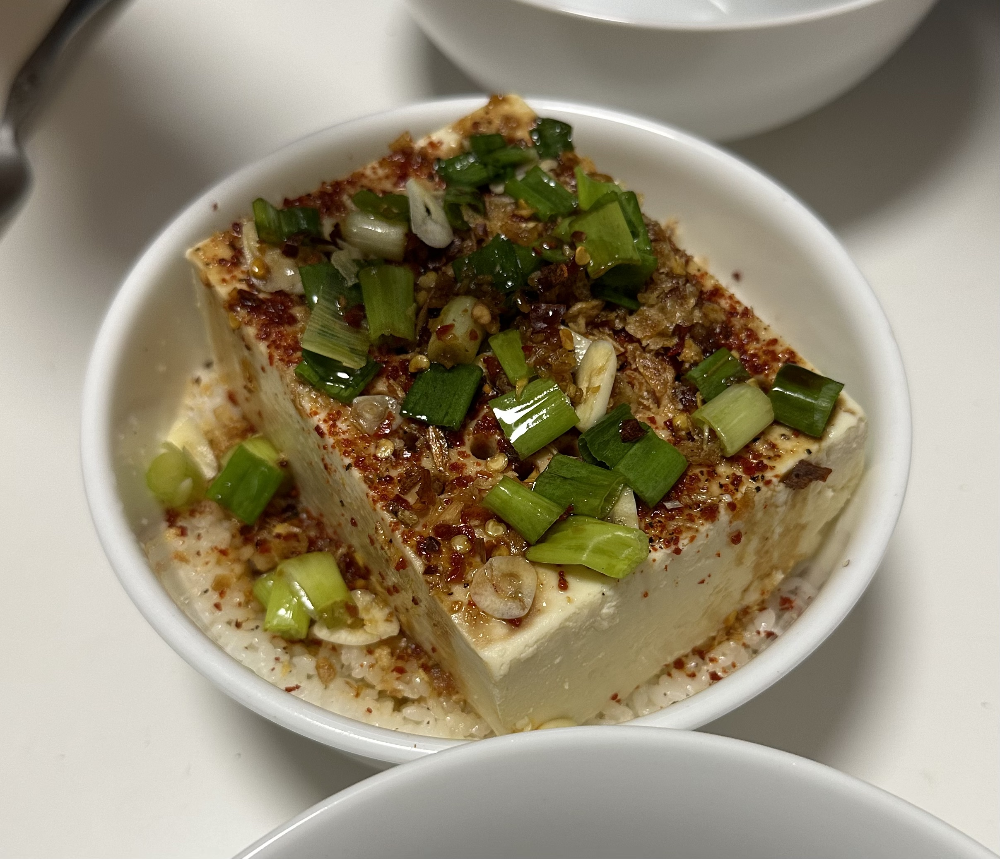

Sizzling Tofu! Yay!

Description
Sizzling tofu is a quick, easy, and customizable dish that is great for warm summer days. We like to eat this on top of short-grain sticky rice to pack a lot of flavor into one bite!
This recipe only takes around 15-20 minutes, and can be made with one pan and topped with the toppings and sauces of your choosing.
Ingredients
- 1 block silken or soft tofu
- 2 cloves of garlic, minced
- 2 green onions, sliced
- neutral oil with a high smoke point (we like to use avocado oil)
- 1/4 red onion or shallot
- pepper and other choice aromatics
For Sauce
- 2.5 tsp soy sauce
- 1 tsp Korean chili flakes - gochugaru
- 1 tsp rice vinegar
Cooking instructions
- Carefully drain and dry your block of tofu. Make sure it stays whole. Use a straw to poke holes in the tofu so that the oil can reach through the tofu.
- Heat the oil in a pan and add your aromatics along with half of the sliced green onion. Cook these until they are browned.
- Create the sauce by mixing the soy sauce and rice vinegar.
- Add the minced garlic, chili powder, and remaining green onion on top of the tofu then pour the sauce mixture over it.
- Remove the aromatics from the oil and pour the oil over the tofu. You don't need to use all the oil, but the heat will be used to bring out the flavors and aromatics from the tofu toppings.
- Serve this with rice and enjoy!